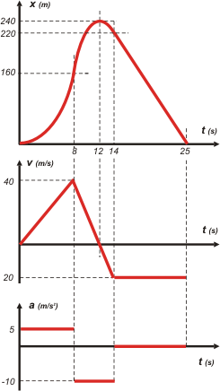

NO ME SALEN
PROBLEMAS RESUELTOS DE FÍSICA DEL CBC
|
|

|
LOS GRAFICOS
Los gráficos son una herramienta cinemática utilísima; nunca dejes de hacerlos con cada ejercicio que resuelvas. Puede ser antes o después, no importa. Ayudan a entender el enunciado, ayudan a resolver el problema. Son herramientas tan claras y didácticas que hoy todo el mundo explica sus cosas con gráficos.
En cinemática tratá de hacerlos siempre de esta forma: de a tres, posición en función del tiempo, velocidad en función del tiempo y aceleración en función del tiempo. En el orden en que los escribí, encolumnados, y con la misma escala de tiempo. Te lo muestro con este ejemplo que saqué del problema 3.5 |
 |
Fijate, el orden es éste:
1ro.- posición - tiempo
2do.- velocidad - tiempo
3ro.- aceleración - tiempo
Este orden no es arbitrario, tiene su lógica (ya te vas a enterar cuando seas más grande, pero te adelanto que tiene que ver con la derivación).
El hecho de que estén encolumnados y con la misma escala de tiempo te ofrece información simultánea en un solo golpe de vista, y te permite pensar cosas interesantes. Por ejemplo fijate la curva de posición, la de arriba: el único momento en que la curva no tiene inclinación es en el instante inicial; justo ahí el segundo gráfico te dice que la velocidad es cero.
A veces sombreamos algunas áreas. Los gráficos suelen albergar mucha más información que la que muestran en primera instancia. |
|
|
Los gráficos no necesariamente deben ser cuantitativos, o sea, no necesariamente deben contener escalas proporcionales ni contener los números que aparecen en los problemas. Es más importante que aprendas a interpretarlos y confeccionarlos en forma cualitativa, "a mano alzada". Sin embargo, cuando cuentes con algún dato, indicalo por su nombre o por su valor. En este último caso, no te olvides de consignar en qué unidades estás considerando esos valores.
Mirá este otro ejemplo, sacado del problema 3.9 |
|
|
|  |
Nuevamente los tenés de a tres, en el mismo orden, encolumnados, y con la misma escala de tiempo. Algunos llaman a esta modalidad "en tándem" (lo cierto es que ese nombre lo inventé yo).
Cuando te toque hacer a vos los gráficos, siempre empezá con el de aceleración, que es el más fácil, luego el de velocidad y por último el de posición. Vas a ver cómo, hacerlos en ese orden te ayuda a no cometer errores. Siempre el de abajo (que es el más fácil) ayuda a predecir el de arriba (que es más difícil).
Los problemas de tiro oblicuo se representan con 6 gráficos: la terna de los horizontales y la terna de los verticales.
Con la práctica vas a ver que los gráficos tienen una potencialidad insospechada. Hay mucha más información que la que te dan aparentemente. Por ejemplo esas áreas que sombreé en gris en los gráficos de arriba. Algo dicen. Las curvaturas, los cortes, los saltos, algo dicen. Ya vas a ver. |
|
 |
| En No me salen, no siempre te hice los gráficos. No dejes de hacerlos vos. |
|
| CHISMES IMPORTANTES: |
|
- En ningún gráfico que representa una función "están permitidas" las rectas verticales (nos estarían diciendo algo que el universo no permite).
- Los gráficos de posición y de velocidad deben ser continuos. Nuestro universo no permite pasar de un salto de un lugar a otro, nos obliga a pasar por infinitas posiciones intermedias. Ni tampoco nos permite saltar de una velocidad a otra... nos obliga a pasar por las infinitas velocidades intermedias.
|
|
| PREGUNTAS CAPCIOSAS: |
|
- En los gráficos de posición-tiempo... ¿puede haber puntos angulosos?
- En los gráficos de velocidad-tiempo... ¿puede haber puntos angulosos?
- ¿De dónde vienen los términos abscisa y ordenada?
- ¿Qué representan las áreas encerradas bajo la curva en los gráficos velocidad-tiempo?
|
|
| |
|
| |
|
| Algunos derechos reservados.
Se permite su reproducción citando la fuente. Última actualización nov-06. Buenos Aires, Argentina. |
|
|
 |
|